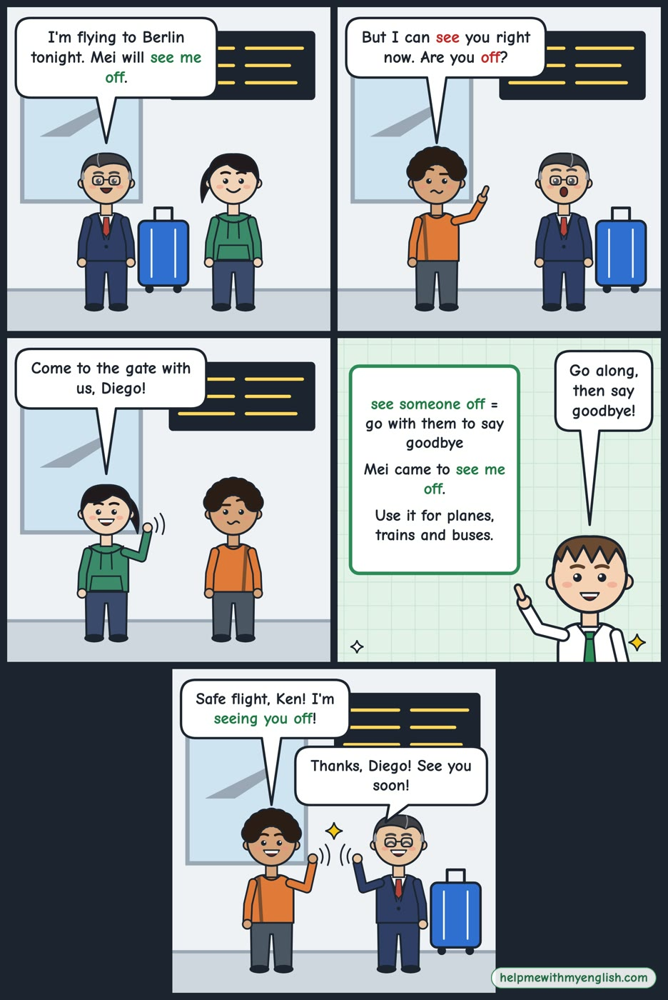

see someone off
To go with someone to the place they are leaving from, so you can say goodbye.
My sister came to the airport to see me off.
Tip: Use it with a person in the middle: 'see someone off' (see him off, see them off); don't say 'see off' without an object, and don't confuse it with 'see someone out' (to the door).
Hear it in conversation
Workbook
1. What does it mean?
In this conversation, what does "see her off" mean?
2. Fill the gap
We all went to the bus stop to Amira before her big trip.
3. Choose the best reply
Mei: I'm so sad that Ken is moving abroad on Friday.
4. Your turn: speak
Tell me about a time you said goodbye to someone at a station or an airport.
Show an example answer
Last summer my best friend moved to Canada, so a few of us went to the airport to see her off. We stayed with her until she had to go through security, and we all took a last photo together. It was sad, but I'm glad I was there.
Answer key: see someone off
- 1. A. Go to the station with her to say goodbye before she leaves
- 2. see off
- 3. B. Me too. A few of us are going to the airport to see him off.
- 4. Example: Last summer my best friend moved to Canada, so a few of us went to the airport to see her off. We stayed with her until she had to go through security, and we all took a last photo together. It was sad, but I'm glad I was there.
See it in a comic
